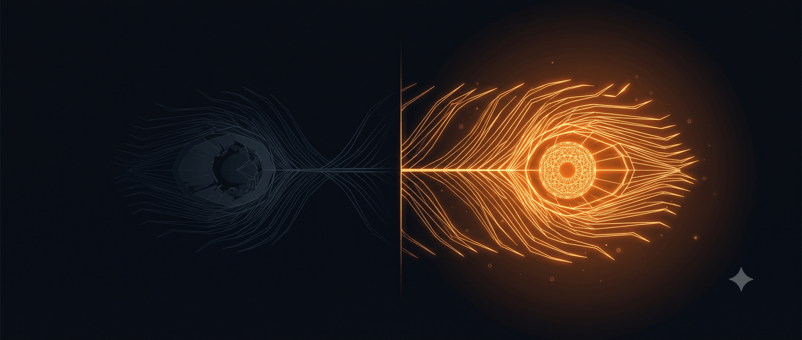

1. Đánh giá là chủ quan
Tôi tránh phán xét người khác vì điều đó gây bất lợi cho tôi, chứ chẳng vì lý do đạo đức hay tử tế.
Bởi, khi chọn sẽ đánh giá người khác, ta chọn để thể hiện tính chủ quan của mình. Nhưng hành vi đánh giá lại thường đem tới cho người ta cảm giác khách quan. Một nhầm lẫn tai hại.
Đánh giá người khác dựa trên tín hiệu xã hội thường được hiểu nhầm như năng lực cá nhân, như thể bạn “thấu hiểu người khác”. Nó khiến bạn rơi vào bẫy người khác giăng ra. Bởi họ có thể thao túng tín hiệu trước khi gửi đến bạn. Những người trình diễn (performer), dù ở bất kỳ sân khấu nào, cũng tuân thủ nguyên tắc này để thao túng khán giả. Họ sẽ làm bạn thấy căm ghét, đau buồn hay bị thuyết phục - và bạn nghĩ phản ứng của mình là hợp lý. Nhưng trong phần lớn thời gian, bạn phản ứng nhờ xúc cảm và mô thức đã nằm sẵn trong bạn, chứ không vì người ta bỏ thêm vào. Sự phản chiếu, như bạn thấy người khác kiêu ngạo, chỉ ra sự kiêu ngạo bên trong bạn và sự tự nhận thức của bạn về nó.
Hãy nghĩ về rage-bait. Kẻ viết ra chúng rất bình tĩnh, và suy tính cẩn thận để làm thế hiệu quả. Còn sự tức giận trào dâng đến mức đủ sức xâm chiếm cơ thể, đều từ năng lượng và xu hướng của người phản ứng.
Vì lẽ đó, người tu hành thấy bình thản bởi họ không còn động lòng, chứ chẳng vì thế giới đã tốt đẹp hơn. Người khiêm tốn sẽ nhẹ nhàng trước kẻ kiêu ngạo, bởi họ không thấy phiền. Người bình tĩnh tất nhiên không dễ nóng giận hay mất kiểm soát khi đón nhận tin tức tiêu cực.
Trong địa hạt của cảm xúc và cảm giác, bạn không thể nhìn thấy kẻ khác. Bạn luôn chỉ thấy chính mình. Khi bạn buồn, vui, ghen tuông, yêu thương… bạn không “trực tiếp” trải nghiệm thế giới nội tâm của người khác. Khi ta nghĩ người kia “giận”, điều ta thấy là “giận” trong mô thức tâm trí của ta, không phải cơn giận thật bên trong họ. Tương tự với các đánh giá về kiêu ngạo: bạn nhìn thấy sự kiêu ngạo bên trong bạn, chứ bạn không thể nhìn xuyên được bản chất người khác. Điều này đã được nói tới trong Hiện tượng học (phenomenology), nhận thức cảm xúc (emotional perception) và cả Phân tâm học.
Thành ra, những người giỏi dán nhãn và phán xét người khác theo hướng độc hại là những người mang theo nhiều mô thức độc hại và cảm xúc tương ứng. Tôi chưa bao giờ quan tâm đến sự kiêu ngạo, ngu ngốc hay ấu trĩ của người khác, trừ khi nó ảnh hưởng tới quyền lợi thực của tôi.
Nhưng ngay cả khi quan tâm, tôi cũng không phản ứng theo cảm xúc. Tôi chỉ làm việc cần làm.
**
2. Hết mình khi trình diễn**
Tôi là một người trình diễn. Một người trình diễn đạo đức khi bước lên sân khấu sẽ diễn hết mình. Những kẻ kém cỏi sẽ lúng túng, sợ bị hiểu nhầm, sợ đánh giá và làm lãng phí thời gian của khán giả.
Tôi sẵn sàng dùng chữ viết của mình để khơi gợi nỗi tức giận, ganh tỵ và kiêu ngạo của người đọc. Không phải lúc nào tôi cũng viết để gây ấn tượng hay mong các bạn nghĩ tốt về tôi. Một người làm nghệ thuật phải quên đi ham muốn tầm thường đó khi bước lên sân khấu. Họ phải làm khán giả cảm thấy căm phẫn, nếu họ đang đóng vai kẻ xấu. Họ phải chú tâm vào bài hát tỉ tê buồn bã của mình, dù họ đang có tâm trạng tốt. Cũng phải nói, một kẻ xấu xa thực sự sẽ chẳng rảnh để bước lên sân khấu, còn người đang có tâm trạng tệ cũng chẳng biểu diễn được.
Một người viết tốt, sáng tác thường xuyên và liên tục, hiển nhiên phải lớn hơn cái nhãn kiêu ngạo bạn dán cho họ. Họ là dân chuyên nghiệp, tất nhiên phải chơi đi chơi lại được trò bạn luôn thấy nguy hiểm.
Tôi luôn nói với học trò của mình: trong sáng tạo và trình diễn, nhàm chán là một lựa chọn. Bạn chọn cư xử theo lẽ thường là bạn chọn trở nên mờ nhạt và nhàm chán. Lên sân khấu để nhảy, vậy đừng khép nép. Bạn phải lắc hông mạnh hơn, vung tay rộng hơn và tuân thủ động tác một cách dứt khoát. Bạn không được ngại khi ưỡn ngực và mông khi nhảy sexy, và không được lo âu khi ke đầu trong lúc hip hop. Khi diễn hài độc thoại, đừng xấu hổ khi phải đóng vai một thằng ngu. Còn khi viết hay nói hùng biện cũng thế, nếu phải kiêu ngạo, vậy hãy kiêu ngạo.
Chính vì đám đông luôn phải khép nép và hành xử theo chuẩn mực, nên các nghệ sĩ và sự dũng cảm của họ trên sân khấu mới có chỗ đứng.
Lên sân khấu và khép nép là bạn đang sỉ nhục nghệ thuật và khán giả của mình.
3. Thế nào là kiêu ngạo
Bảy tội ác lớn được Giáo hội Công giáo đề cập bao gồm: kiêu ngạo, tham lam, giận dữ, đố kị, dâm dục, phàm ăn và lười biếng.
Khi nhìn vào chúng, tôi tò mò vì sao chúng lại tồn tại hơn là vì sao người ta lại phê phán chúng. Bởi sự tồn tại thâm căn cố đế và mãnh liệt của chúng, đến mức người ta phải dặn nhau kìm hãm, làm tôi hứng thú. Tôi từng viết một bài luận về đố kị, nói qua một chút về giận dữ, và giờ sẽ bàn thêm về kiêu ngạo. Tôi bàn về chúng qua Game Theory và Evolution Theory.
Với đố kị, các học giả nói rằng nó sinh ra để chống bất công. Sự đố kị tồn tại trong cộng đồng nhằm kiểm soát phân phối tài nguyên, tránh để ai đó nhận nhiều hơn mức họ xứng đáng khiến mất cân bằng. Nếu chỉ có mười cái đùi gà và mười người, hiển nhiên mười người đó phải khó chịu với bất kì ai nhận được nhiều hơn một cái mà không có lý do hợp lý.
Với kiêu ngạo, buồn cười là tôi thấy người ta hiểu nhầm, hoặc không thực sự hiểu rõ định nghĩa. Đa số thời gian, việc bạn thấy ai đó kiêu ngạo thực chất là bạn đang đố kị. Bởi kiêu ngạo trong Thất đại tội là “pride”, và nó có nghĩa là “đặt mình lên trên Chúa, chân lý hoặc trật tự đạo đức, và từ chối thừa nhận sự phụ thuộc hoặc giới hạn”. Biểu tượng của kiêu ngạo sẽ là Lucifer, người từ chối phục vụ. Niềm kiêu hãnh (hãy gọi thế này) vì vậy mang tính siêu hình. Giáo hội răn người ta không làm thế bởi họ muốn loại bỏ vị trí thách thức sự tồn tại của God và heaven. Bởi nếu muốn God, hay heaven có vị trí tối thượng, bạn nhất thiết phải dạy rằng không ai được phép đứng ở một vị trí vượt trội để tham chiếu với hai đại lượng tối thượng ấy. Lời răn siêu hình này có phạm vi vũ trụ (cosmic) và Giáo hội chuyển nó về “root of sin” để hạ nó xuống đáy, biến tất cả những vị trí “trên cả Chúa” thành không tồn tại và ám chỉ chúng chỉ là ảo ảnh sinh ra từ bên dưới.
Còn kiêu ngạo, arrogance, là một thái độ tâm lý/xã hội được thể hiện qua hành động và lời nói. Chúng tồn tại vì mang tới các lợi thế nhất định, và bị kìm hãm vì quá nhiều kiêu ngạo sẽ gây bất ổn.
Sự kiêu ngạo thường bị nhầm lẫn với sự tự tin. Chúng không mấy khác biệt ở khởi đầu, nhưng lại khác xa khi xét thái độ lâu dài:
- Tự tin: dựa trên năng lực, nhận thức được giới hạn và sẵn sàng sửa đổi.
- Kiêu ngạo: tự đề cao bản thân, coi thường quan điểm của người khác và chống đối việc sửa đổi.
Như vậy, sự kiêu ngạo là sự tự tin thái quá mà không có sự điều chỉnh. Nếu bạn có niềm tin vào bản thân lớn tới mức tách rời khỏi thực tế, bạn đang kiêu ngạo.
Trong ngắn hạn, kiêu ngạo mang tới các tín hiệu xã hội tích cực bởi nó cũng giống với tự tin hay quyết đoán. Điều này tạo ra sự lôi cuốn. Nhưng vì những kẻ kiêu ngạo không có khả năng thay đổi niềm tin hay quan điểm của cá nhân để thích ứng với bối cảnh, qua thời gian, sự kiêu ngạo sẽ làm xói mòn lòng tin, tinh thần đồng đội và các mối quan hệ. Bởi người kiêu ngạo không sẵn lòng lắng nghe, thích nghi hay thừa nhận sai lầm, nên họ sẽ làm mất cân bằng và gây rạn nứt.
Thành ra, nếu bạn nhìn thấy một bài viết của tôi và nói rằng tôi kiêu ngạo, bạn đang đố kị. Những người theo dõi và tiếp xúc với tôi lâu năm lại nói tôi đáng yêu, bởi họ thấy tôi vẫn sẵn sàng lắng nghe, thay đổi để thích nghi và thừa nhận sai lầm.
Lại phải nói, kiêu ngạo không nhất thiết ồn ào. Như tôi vẫn nói, những kẻ cố tỏ ra khiêm nhường nhất thực ra lại là kiêu ngạo nhất, bởi chúng tin rằng mình có đạo đức vượt trội. Về cơ bản, bất kì ai đoan chắc về sự vượt trội của mình và không có ý định điều chỉnh nó đều là kiêu ngạo. Nếu họ tin rằng họ đang viết tốt hơn tôi vì họ “humble hơn”, họ đang kiêu ngạo. Họ nghĩ rằng bản thân “quan tâm hơn” và “tốt đẹp hơn”, họ đang kiêu ngạo. Họ cho rằng “phải nhìn thế giới với thái độ thế này mới đúng”, họ đang kiêu ngạo.
Và một chút kiêu ngạo sẽ làm họ hấp dẫn hơn thật. Nhưng chỉ một chút thôi nhé.
4. Không chỉ là nghệ thuật biểu diễn
[phần này dẫn lại từ một bài viết trên aoen] [1]
“Nghĩ mình là đặc biệt và khác biệt khiến một người trở nên sáng tạo,” nhà nghiên cứu Lynne Vincent giải thích. Nhà tâm lý Roy Baumeister cũng chứng minh, người thuộc típ này không phải có ham muốn mạnh hơn người khác, mà họ do dự, hối hận và suy nghĩ ít hơn trước khi hành động. Vì thế, họ nhanh nhẹn thực hiện các ý tưởng và đôi khi mang lại lợi ích cho xã hội.
Nhà tâm lý học Del Paulhus (Đại học British Columbia) là người đầu tiên đặt tên cho nhóm khái niệm “bộ ba đen tối”, gồm ba khuynh hướng tính cách: (1) Machiavellianism (xảo quyệt, mưu mô luôn toan tính ngầm để đạt mục đích cá nhân), (2) psychopathy (bốc đồng, liều lĩnh, thiếu cảm xúc và sẵn sàng tổn thương người khác mà không hề áy náy), và (3) narcissism (tự cao tự đại, luôn muốn trở thành trung tâm, thích được ngưỡng mộ và chiếm những phần tốt nhất cho bản thân). Những đặc điểm này, dù bị nhìn nhận là tiêu cực, vẫn liên tục tồn tại trong xã hội loài người vì trong một số tình thế, chúng tạo lợi thế cạnh tranh và sinh tồn.
Một số công trình nghiên cứu trong thời gian gần đây cho thấy, khi các nét “bóng tối” này chỉ ở mức độ vừa phải, không phát triển đến rối loạn nhân cách, chúng lại thúc đẩy con người nhìn nhận thế giới dưới những góc độ mới, sáng tạo và linh hoạt hơn. Theo nhà nghiên cứu Robert Biswas-Diener (Đại học Bang Portland), con người đôi khi cũng cần cho phép bản thân thể hiện chút quyền lực, sự chiến thắng, hoặc tranh đấu quyền lợi – thỉnh thoảng vị kỷ một chút, gian lận và khoe khoang cũng không có gì xấu, thậm chí giúp phát triển óc sáng tạo, đạt thành tựu và đóng góp tích cực cho tập thể.
Khía cạnh “đen tối” thường bị dè chừng nhất nhưng có thể nổi bật trong xã hội chính là các đặc tính liên quan đến rối loạn nhân cách chống đối xã hội (antisocial personality – psychopathy). Nhà nghiên cứu Robert Hare đã xây dựng bộ tiêu chí nhận diện nhóm này: từ sự khéo léo bề ngoài, ham kiểm soát, đến thiếu cảm xúc thực sự, lạnh lùng, dễ hưng phấn, thích mạo hiểm. Nếu hội tụ đầy đủ các nét ấy, người đó là mối nguy hiểm thật sự, nhưng chỉ cần một vài nét ở mức thấp thì người đó lại có thể có năng lực giao tiếp, quyết đoán vượt trội và tập trung hoàn thành mục tiêu.
Khó có ví dụ nào rõ hơn về mặt tích cực tiềm ẩn của những nét “đen tối” như ở giới lãnh đạo cấp cao. Scott Lilienfeld (Đại học Emory) từng khảo sát các đặc điểm này ở hơn 40 tổng thống Mỹ và nhận thấy, nhiều nhà lãnh đạo được đánh giá thành công có chung một phẩm chất gọi là “thống lĩnh không sợ hãi” – nghĩa là rất ít lo ngại trước hiểm nguy. Đặc điểm này vừa là nét của người hùng, vừa gắn với tâm lý học tội phạm; nhưng trong bối cảnh cần ra quyết định lớn lao, nó lại là yếu tố giúp họ dẫn dắt, xử lý khủng hoảng, tạo uy thế trên trường quốc tế và bắt đầu những dự án quy mô lớn.
Những người có cảm giác “xứng đáng được ưu ái” thường không phải vì họ có khao khát mạnh mẽ hơn người, mà vì họ ít bị giằng xé, đắn đo hay tội lỗi trước quyết định của mình. Trong nghiên cứu, những tổng thống như Reagan, Clinton, hoặc George W. Bush đều là kiểu lãnh đạo dứt khoát, gây tranh cãi nhưng rất hiệu quả khi cần thực thi ý chí cá nhân.
5. Sự cần thiết của thói kiêu ngạo
Nếu bạn quá vâng lời và tuân thủ, hiển nhiên bạn sẽ nhàm chán. Bạn nói những gì được phép, và vì vậy, chúng thật dễ đoán. Khi nào bạn mới viết ra những câu kiểu: “Kiêu ngạo là một trong Thất đại tội. Còn tôi là bố của nó”.
Khi nào bạn sẽ đặt tên cho con mèo mình nuôi là God?
Bằng cách tuân thủ và phục tùng trong phần lớn thời gian, bạn đánh mất khả năng sáng tạo một cách tinh tế. Sự tuân thủ của bạn mang tính phổ quát, và nó làm xói mòn sự tự tin hay ngạo mạn ở các chi tiết nhỏ. Bạn đánh mất sự sáng tạo và độc đáo.
Và bởi vì bạn đã đánh mất nó, những cá nhân kiêu ngạo hơn sẽ giành được chúng một cách dễ dàng.
“Urapmin là một cộng đồng hẻo lánh trong dãy núi Papua New Guinea, không có điện ở bất kỳ ngôi làng nào trong bảy ngôi làng của họ. Người dân ở đây, cũng được gọi là Urapmin, không có nguồn thu nhập ổn định. Họ xây nhà bằng các vật liệu lấy từ khu rừng nhiệt đới bao quanh và tự trồng trọt, săn bắt để lấy thức ăn.
Urapmin có khoảng 400 người, và chỉ có một vài người là đối tượng mà mọi người thường nghĩ hoặc bàn luận đến nhiều nhất. Một người mà tôi sẽ gọi là Kinimnok là một cá nhân như vậy. Anh ta thường xuyên khoe khoang, nói lớn tiếng và hay nổi giận. Hầu hết người Urapmin có xu hướng giữ gìn thành tích cho riêng mình, sống trầm lặng, và không bao giờ thể hiện sự tức giận công khai vì lo ngại điều đó có thể khiến người khác bị bệnh. Phong thái của Kinimnok hoàn toàn không giống người Urapmin.
[…]
Năm đầu sống ở Urapmin, tôi thấy Kinimnok thật áp đảo, gây khó chịu và đoán rằng mọi người cũng nghĩ vậy. Thực tế, họ thường nhắc đến anh ta với thái độ hơi phán xét. Thế nhưng, khi Kinimnok đe dọa giết người mà Urapmin bầu làm đại diện liên hệ với người ngoài, nhiều người bắt đầu sợ rằng chính phủ sẽ biết chuyện này và bắt Kinimnok đi đâu đó xa xôi. Dù mọi người đồng thuận rằng lời đe dọa đó quá đáng, viễn cảnh Kinimnok bị đưa đi lại khiến cả cộng đồng buồn bã. Sự bày tỏ nỗi buồn về khả năng Kinimnok bị loại khỏi cộng đồng đã khiến tôi bối rối. Tôi phải đánh giá lại góc nhìn của mình về vị trí của Kinimnok với người dân.
Tôi hỏi mọi người ai là ‘người Urapmin yêu thích’ của họ, và bất ngờ thay, nhiều người nhất lại chọn tên anh ấy. “Anh ấy vui tính lắm,” họ nói, “và thường có thịt để cho đi.” Kinimnok, người mà từng lúc nào đó khiến hầu như ai cũng dậy sóng, hóa ra lại là một trong những người được yêu mến nhất.
Trong những năm sau khi rời Urapmin, tôi đã dành thời gian suy nghĩ vì sao Kinimnok lại được người dân yêu thích đến vậy, và gần đây tôi nghĩ mình đã tìm ra câu trả lời.
Người Urapmin coi Kinimnok là người ‘có ý chí mạnh mẽ’ (futebemin). Anh ấy làm theo ý mình mà không quan tâm người khác. Người Urapmin cho rằng đôi khi cần thiết phải có những người như vậy, vì đôi khi cần có người đẩy người khác đi xa hơn để hình thành những điều mới mẻ như hôn nhân, nhóm đi săn hay nhóm chăm vườn. Tuy nhiên, họ cũng nghĩ rằng ý chí mạnh chỉ nên ở mức vừa phải. Họ cũng trân trọng một đức tính đối lập gọi là ‘tuân thủ phép tắc’ (awem) nghĩa là gìn giữ cái đang có, chấp nhận trách nhiệm xã hội hiện tại thay vì tạo ra cái mới. Hầu hết người Urapmin dành cả đời đi tìm sự cân bằng giữa ý chí mạnh và tuân thủ phép tắc. Họ chuyển qua lại giữa hai giá trị này, không đạt tới trọn vẹn cái nào, nhưng cũng không bỏ sót giá trị nào. Tôi nghĩ Kinimnok hấp dẫn người khác là vì anh ấy cho họ thấy ý chí mạnh sẽ ra sao nếu được thể hiện toàn vẹn. Phần lớn mọi người sẽ không đi theo để thực thi ý chí ấy, nhưng trong Kinimnok, họ nhìn thấy ví dụ sống động về ý chí mạnh mẽ được phát huy tối đa.” [2]
6. Lợi ích của kiêu ngạo trong ngắn hạn và sự nguy hại dài hạn, theo Lý thuyết Trò chơi
Trong trò chơi tiến hóa, kiêu ngạo có thể được nhìn nhận như một chiến lược tín hiệu nổi bật nhằm tối ưu hóa cơ hội sinh tồn hoặc sinh sản. Dưới góc độ lý thuyết trò chơi tiến hóa, mỗi kiểu hành vi đều là một chiến lược cạnh tranh, chỉ phát triển mạnh khi mang lại lợi thế thực tế cho người sở hữu. Đôi khi, sự kiêu ngạo đóng vai trò như một tín hiệu thành thật: khi xuất phát từ sức mạnh hoặc năng lực thực sự, nó giúp cá nhân tránh khỏi những xung đột tốn kém - giống như tiếng gầm rền của con sư tử, cảnh báo kẻ khác đừng dại thách thức. Tuy vậy, kiêu ngạo cũng có thể chỉ là một màn phô diễn giả tạo: một người bình thường vẫn có thể trông nguy hiểm nhờ thái độ ngạo mạn, qua đó khiến đối thủ dè chừng chỉ bằng lớp vỏ ngoài. Khi chiến lược này phát huy tác dụng đủ nhiều, nó sẽ được duy trì trong quần thể như một thế cân bằng, dù luôn tồn tại sự căng thẳng - nếu lạm dụng bluff quá nhiều, kẻ khác sớm nhận ra và hiện tượng này sẽ sụp đổ.
Bức tranh này được minh họa rất rõ qua mô hình trò chơi Hawk-Dove. Trong đó, “chim diều hâu” luôn xông vào xung đột, hưởng lợi khi gặp “chim bồ câu” nhún nhường nhưng chịu tổn thất khi gặp một diều hâu khác. Ngược lại, chim bồ câu né tránh đối đầu, sẵn sàng chia sẻ nhưng cũng dễ bị lợi dụng. Đặt vấn đề dưới lăng kính kiêu ngạo, người “chim diều hâu kiêu ngạo” dễ dàng chiếm thế thượng phong khi phần lớn cộng đồng là “bồ câu khiêm nhường”, giành được vị trí lãnh đạo và tài nguyên. Tuy nhiên, nếu ai cũng trở nên kiêu ngạo, xung đột liên tục sẽ làm tổn hao tập thể, dẫn tới suy tàn - một kịch bản quá quen thuộc trong lịch sử, từ những cuộc chiến quyền lực cho tới các công ty thất bại vì lãnh đạo quá hiếu thắng.
Thuyết “Handicap Principle” của Zahavi tiếp tục bổ sung một tầng ý nghĩa sinh học cho chủ đề này. Trong tự nhiên, các tín hiệu phô trương - như đuôi công rực rỡ - tồn tại chính bởi cái giá phải trả: chỉ loài vật thật sự khỏe mạnh mới dám “khoe”. Tương tự, sự kiêu ngạo cũng là một dạng tín hiệu tốn kém. Khi dám bất chấp nguy hiểm, sẵn sàng gây thù chuốc oán, người kiêu ngạo gửi đi thông điệp: “Tôi đủ mạnh mẽ để chịu mọi hệ quả.” Vì thế, không hiếm khi cộng đồng - hoặc thậm chí bạn đời tiềm năng - cảm thấy bị thu hút, bởi họ tin rằng kẻ dám thách thức ấy quả thực vượt trội. Nhưng cũng như đuôi công quá dài, sự phô diễn quá mức sẽ dẫn đến sa lầy, dễ trở thành mục tiêu yếu điểm trong tập thể.
Lý thuyết trò chơi còn cảnh báo: chỉ trong các cuộc chơi “một lần” (đàm phán ngắn hạn, chiến thắng tức thời), kiêu ngạo mới đem lại lợi nhuận lớn. Khi các mối quan hệ lặp đi lặp lại - như cộng đồng thân thiết, đối tác lâu dài, hay chính trị bền vững - lòng kiêu ngạo phá hủy lòng tin, dẫn tới sự đào thoát tập thể và cuối cùng là thất bại của chính người kiêu ngạo. Bởi vậy, chiến lược này chỉ nở rộ trong các hoàn cảnh biến đổi nhanh, nhiều cạnh tranh (chính trị nhiệm kỳ ngắn, thị trường sôi động), còn ở môi trường ổn định và gắn bó, nó lại lụi tàn.
Nhìn rộng ra toàn xã hội, có thể hình dung mỗi nền văn hóa như một “siêu trò chơi”. Những cộng đồng ít kiêu ngạo thường phát triển lòng tin, sự hợp tác - song lại trở thành miếng mồi ngon cho những kẻ kiêu ngạo xuất hiện bất ngờ. Ngược lại, những tập thể tràn ngập tính tranh đấu sẽ đi vào vòng xoáy xung đột, và sau sự sụp đổ, hợp tác lại tái lập. Cứ như vậy, hợp tác và kiêu ngạo luân phiên chiếm ưu thế theo chu kỳ.
7. Kết
Tôi viết bài này để dạy cho bạn bài học về lòng kiêu ngạo.
Nhưng bạn sẽ không đọc hết được nó. Bởi bạn quá kiêu ngạo.
🔍 Phân tích bài viết
📌 Tóm tắt ý chính
- Đánh giá người khác là chủ quan: thấy ai đó “kiêu ngạo” thường là phản chiếu mô thức nội tâm của chính người đánh giá (hiện tượng học, nhận thức cảm xúc), không phải bằng chứng khách quan.
- Phân biệt then chốt: tự tin dựa trên năng lực, nhận biết giới hạn, sẵn sàng sửa đổi; kiêu ngạo tự đề cao và chống đối việc sửa đổi. Khác biệt không nằm ở mức độ tự tin mà ở khả năng điều chỉnh.
- “Bộ ba đen tối” (Machiavellianism, psychopathy, narcissism) ở mức độ vừa phải có thể tạo lợi thế cạnh tranh, sáng tạo, khả năng lãnh đạo quyết đoán — minh hoạ qua case 40 tổng thống Mỹ và cộng đồng Urapmin (Papua New Guinea), nơi người “ý chí mạnh” dù gây khó chịu vẫn được yêu mến.
- Theo lý thuyết trò chơi tiến hoá, kiêu ngạo là tín hiệu tốn kém (handicap principle) — có lợi trong tương tác một lần/ngắn hạn (Hawk-Dove), nhưng phá huỷ lòng tin trong quan hệ lặp lại dài hạn.
🗺️ Mindmap
💡 Insight & Góc nhìn đa chiều
- Xu hướng: Bài là một minh chứng sống của chính cơ chế nó phân tích — tác giả tự nhận là “người trình diễn”, cố ý viết để khơi gợi tức giận, ghen tị ở độc giả, đúng là chiến thuật “rage-bait” mà chính bài mô tả ở đầu. Đây vừa là bài phân tích vừa là một màn trình diễn về đúng chủ đề nó bàn — một dạng meta-performance có chủ đích.
- Ai được lợi: Khung “dark triad ở mức vừa phải giúp thành công” đang được dùng rộng rãi trong văn hoá startup/hustle để biện minh cho phong cách quản lý độc đoán. Nghiên cứu về “thống lĩnh không sợ hãi” ở tổng thống Mỹ dễ bị trích dẫn cắt cụt để hợp thức hoá việc coi thường cảm xúc nhân viên, trong khi nghiên cứu gốc không hề khuyến nghị áp dụng đại trà.
- Điều ẩn: Case Kinimnok ở Urapmin — người bị chính cộng đồng lo sợ sẽ “bị chính phủ bắt đi” vì đe doạ giết người — là hành vi bạo lực nghiêm trọng, không chỉ là “kiêu ngạo dễ mến”. Bài dùng case này để minh hoạ “kiêu ngạo được yêu mến” nhưng làm nhẹ đi mức độ nghiêm trọng thật của hành vi, biến nó thành một giai thoại thú vị về “ý chí mạnh”.
⚖️ Phản biện
- Lập luận mở đầu (“đánh giá người khác luôn là phản chiếu chủ quan của chính người đánh giá”) được dùng để tự miễn trừ mọi phê bình nhắm vào tác giả — “nếu bạn nói tôi kiêu ngạo, bạn đang đố kị”. Đây là một dạng ngụy biện tự miễn dịch (unfalsifiable): bất kỳ phản đối nào cũng bị diễn giải lại thành bằng chứng ủng hộ luận điểm, khiến lập luận không thể bị bác bỏ bằng bất kỳ bằng chứng nào.
- Câu chuyện Kinimnok bị trình bày thiếu cân nhắc mức độ nghiêm trọng: người này đe doạ giết đại diện cộng đồng — hành vi mà chính người Urapmin cũng đồng thuận là “quá đáng”. Nỗi buồn của cộng đồng khi anh ta có thể bị bắt đi không nhất thiết là bằng chứng họ “yêu mến” hành vi đe doạ giết người — có thể chỉ là sự phức tạp thông thường của quan hệ cộng đồng (thương người thân dù ghét hành vi của họ). Biến câu chuyện này thành minh chứng dễ chịu cho “một chút kiêu ngạo là cần thiết” là một bước nhảy logic đáng ngờ.
- Nghiên cứu về dark triad và lãnh đạo (Lilienfeld) được trích để ủng hộ “kiêu ngạo có lợi”, nhưng bài bỏ qua phần cân bằng quan trọng của chính dòng nghiên cứu này: “thống lĩnh không sợ hãi” (fearless dominance) trong các nghiên cứu gốc thường đi kèm cảnh báo về mặt trái — tương quan với quyết định liều lĩnh gây hậu quả xấu, không chỉ thành công.
❓ Câu hỏi mở
- Nếu “đánh giá người khác luôn là phản chiếu chủ quan”, làm sao phân biệt giữa phản chiếu chủ quan (đố kị) và nhận định có căn cứ về hành vi thực sự gây hại (như case Kinimnok đe doạ giết người)? Bài không đưa ra tiêu chí nào để tách hai điều này.
- Handicap principle giải thích vì sao kiêu ngạo là tín hiệu tốn kém đáng tin trong tự nhiên — nhưng trong môi trường số nơi chi phí phô trương gần như bằng không (chỉ cần gõ chữ), liệu “kiêu ngạo” trên mạng xã hội còn giữ được tính tốn kém thật mà lý thuyết yêu cầu để đáng tin, hay nó đã trở thành một dạng bluff rẻ tiền hàng loạt?
- Bài phân biệt game “một lần” (kiêu ngạo có lợi) và “lặp lại” (kiêu ngạo có hại) — nhưng việc viết công khai trên một nền tảng lưu trữ vĩnh viễn có phải luôn là một game lặp lại theo đúng nghĩa, hay tác giả đang tận dụng ảo giác “mỗi bài viết là một ván riêng biệt” trong khi danh tiếng thực chất tích luỹ qua thời gian?
🇻🇳 Liên hệ Việt Nam
- Văn hoá công sở VN truyền thống đề cao khiêm tốn gần như tuyệt đối — bài này chạm đúng một căng thẳng thật ở người trẻ VN: giữa áp lực xã hội phải khiêm nhường và nhu cầu thể hiện năng lực để được công nhận, đặc biệt ở công ty nước ngoài nơi văn hoá tự thể hiện đối lập rõ với truyền thống Việt.
- Case Kinimnok gợi liên hệ tới hiện tượng “sếp độc đoán nhưng được yêu mến” khá phổ biến ở doanh nghiệp VN — nhân viên vừa phàn nàn về tính khí, vừa gắn bó lâu dài vì người đó mang lại sự quyết đoán mà tập thể thiếu, đúng động lực “cần người ý chí mạnh” mà bài mô tả ở Urapmin.
📖 Giải thích thuật ngữ
- Dark triad (bộ ba đen tối): ba đặc điểm tính cách — Machiavellianism (mưu mô, toan tính), psychopathy (thiếu cảm xúc, liều lĩnh), narcissism (tự cao, muốn làm trung tâm). Ở mức vừa phải có thể liên quan tới quyết đoán và sáng tạo; ở mức cao là rối loạn nhân cách nguy hiểm.
- Handicap Principle (nguyên lý gánh nặng — Zahavi): một tín hiệu chỉ đáng tin nếu nó tốn kém, vì chỉ cá thể đủ mạnh mới “chịu nổi” cái giá của việc phô trương. Ví dụ: đuôi công dài rực rỡ vừa là gánh nặng sinh tồn (dễ bị săn), vừa là bằng chứng con công đó đủ khoẻ để sống sót dù mang gánh nặng đó.
- Hawk-Dove game (trò chơi diều hâu — bồ câu): mô hình lý thuyết trò chơi mô tả hai chiến lược đối lập — “diều hâu” luôn tranh giành, “bồ câu” luôn nhường nhịn. Chiến lược nào thắng phụ thuộc vào tỷ lệ mỗi loại trong quần thể, không có chiến lược nào thắng tuyệt đối trong mọi hoàn cảnh.
- Phenomenology (hiện tượng học): trường phái triết học nghiên cứu cách con người trải nghiệm thế giới qua ý thức chủ quan — cho rằng ta không bao giờ tiếp cận trực tiếp “thực tại khách quan” mà chỉ qua lăng kính nhận thức của chính mình.